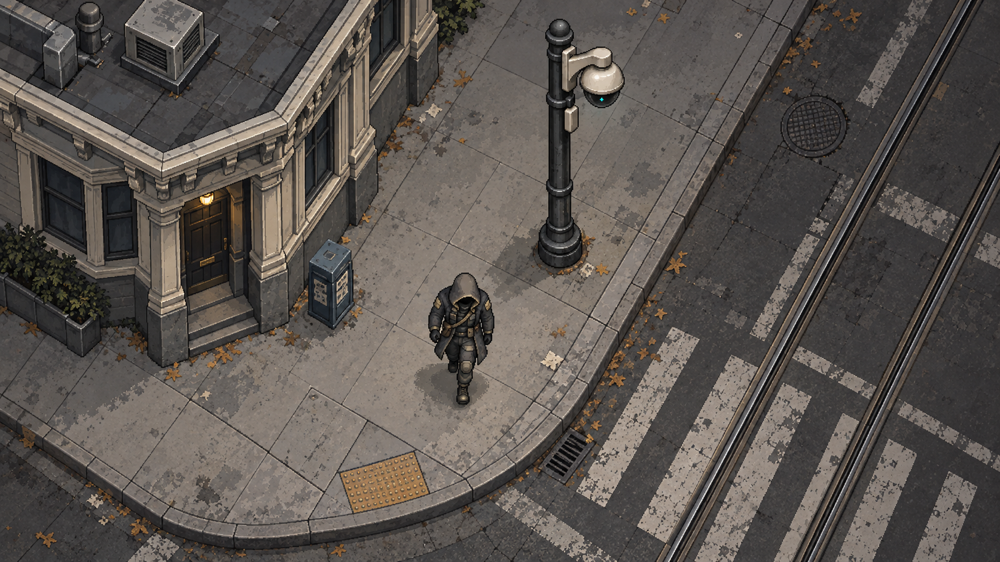

Real V8 native evidence is available for review. Captures display only after all evidence checks pass on this load.
Review only, not accepted. V7 remains rejected and immutable. The V8 comparison is baselineV7 versus candidateV8 shared ground/base/prop repair. Player, Camera, view center, fields, solids and controls remain fixed. Registration checks are not visual acceptance. No production admission, motion, physical-device or owner acceptance is claimed.
Waiting to verify source-scene records and all evidence bytes. Missing or invalid evidence will not display and cannot fall back.
Logical CSS dimensions remain exact regardless of capture PNG pixel density. Narrow screens scroll inside each image frame, never shrink the native view.
Full original, uniformly fitted without cropping. Grayscale is a reversible display filter only.

Original benchmark image is missing. No substitute is displayed.